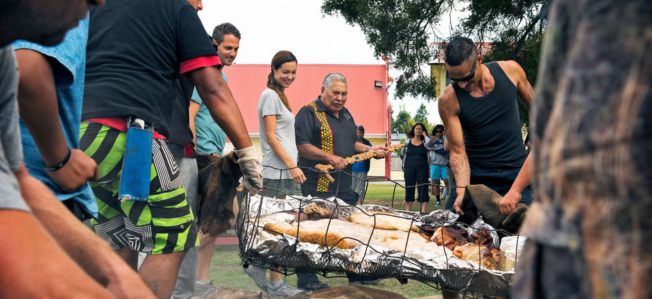
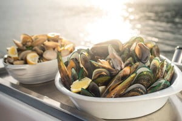
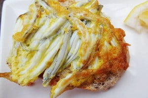
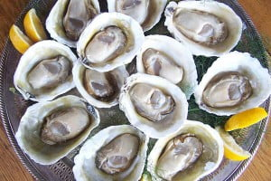
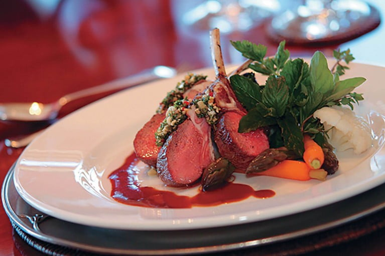
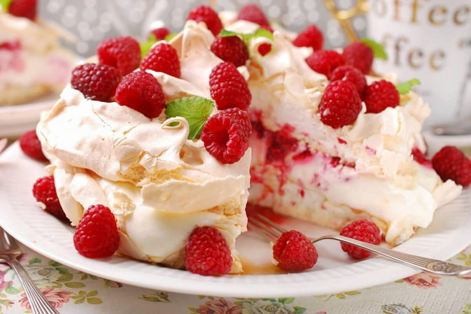

毛利傳統窯烤美食（Hāngī）
{kind=link}
說到紐西蘭的傳統美食，一定會先想到Hāngī，Hāngī是毛利人獨特的烹調方式，已有2000多年的歷史，如今只在特殊場合用到。以傳統窯烤方式 它是種毛利傳統火鍋，製作方法非常特別：需要在地上挖一個深坑，放入烈火加熱過的石塊，再用亞麻或樹葉將肉與蔬菜包裹起來放置在坑中，最後掩土覆蓋將食物煨熟，全過程需要個把小時。位於北島中部的羅托魯瓦（Rotorua）是享受此文化盛宴的最佳地點之一。 除了Hāngī外，當地還有很多每個人一定都會想嘗試當地的料理......
翡翠青口（Green-Lipped Mussel）
{kind=link}
又名青邊青口，外殼色澤如同翡翠一般艷麗，是紐西蘭獨有的貝類。體形巨大，每隻約兩至三吋長，厚肉飽滿。當中以南島北部馬爾堡（Marlborough）出產的最為肥美可口，佔紐西蘭八成的收成。
銀魚煎餅（Whitebait Fritter）
{kind=link}
以南島的西海岸（West Coast）的銀魚最聞名，將幼魚攪拌進淺金色的蛋液里，熱鍋做成的脆皮煎蛋卷，雖然看似很普通，但它是一道無可取代的出色餐點，不論是搭配沙律、檸檬汁還是配撘塔塔沙律醬都非常美味。
Bluff生蠔
{kind=link}
聞名的Bluff生蠔是布拉夫港的特產，是紐西蘭的生蠔之王。這種蠔身扁平、肉味鮮甜的蠔類，在福沃斯海峽（Foveaux Strait）寒冷清澈的海水中慢慢成長，因而碩大肥美、鮮嫩多汁。每年5月蠔季，亦是當地生蠔長至最為肥美的時節，在布拉夫港都會舉行生蠔節（Bluff Oyster and Food Festival），供應生蠔、青口和海膽等各式海鮮，萬勿錯過！
烤羊肉
{kind=link}
以農牧立國的紐西蘭，肉類食品必然首屈一指！紐西蘭的羊肉在世界各地備受尊崇，是全國頂級出口肉類之一。多汁軟嫩的烤羊肉是紐西蘭人的最愛。鮮嫩的羊肉配搭迷迭香及大量的時令蔬菜，紐西蘭烤羊肉絕對令人吃後回味無窮！你在整個紐西蘭的頂級餐廳的菜單上必定可以找到烤羊肉。
炸魚薯條

在一個溫暖的夏日晚上，坐在紐西蘭海灘上品嚐炸魚薯條，是紐西蘭人最愛的最佳享受。以新鮮捕獲的鯛魚，最常見的魚類是Terakihi和Hoki油炸而成，一般來說扇貝和魷魚圈也經常被包括在內。炸魚薯條在紐西蘭幾乎無處不在，伴隨啤酒，一絕！
甜品Pavlova
{kind=link}
紐西蘭人酷愛甜食，水果奶油蛋糕（Pavlova）作為一道極其受歡迎的甜點，以粟粉製作的麵皮表層酥脆、內裏綿軟，再被奇異果、熱情果、士多啤梨水果等覆蓋，是紐西蘭人慶祝節日時必不可少的一道甜點，尤其聖誕節期間必備！